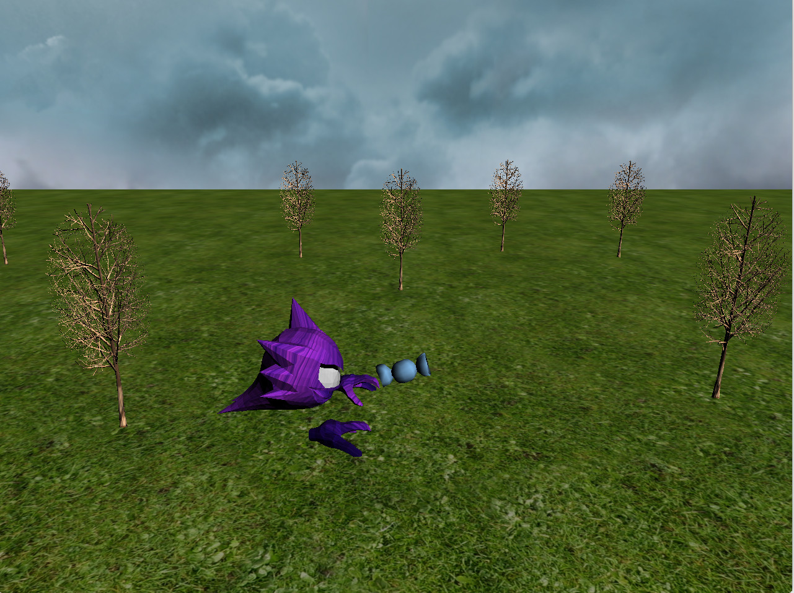
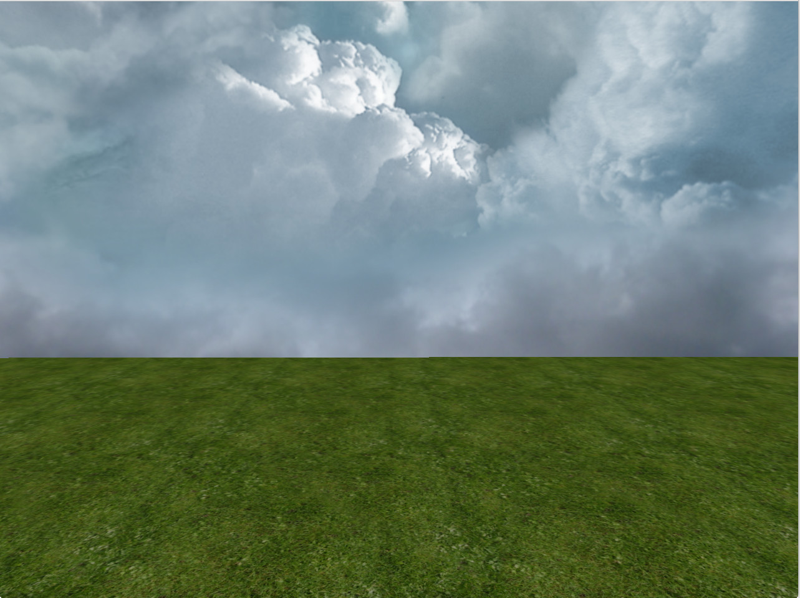

Video Demo
Introduction
Rare candy is hard to come by in the Pokemon world, but Haunter seems to have found a forest full of them. You can play as Haunter in this simple game and collect as much candy as you want! This is written in C++ and OpenGL.
Controls
- WASD to move
- Arrow keys to move camera location
- Mouse scrolling to rotate/look around
- T to change/respawn tree locations
- C to change/respawn candy location
Features
- Hierarchical Models
- Collision Detection
- Camera Control
- Textures
- Skybox
Collision Detection
Collision Detection is being implemented by calculating the distances between Haunter and the other objects in the world. If the distance between Haunter and the other object is less than the sum of their bounding sphere's radius, then we have a collision. I am using this to check if Haunter is colliding with the tree or candy. The candy will respawn at a differnt location once it collides with Haunter. Haunter is not able to pass through the trees, but he is free to float off the map or ground plane.
Camera Control
The camera is free floating and can move around separately from Haunter. You can use the arrow keys to move the camera forward, backward, left, or right. You can also use mouse scrolling to look around the world.
Textures
I was not able to get the original textures that came with the obj files. However, I did end up finding some textures that made the models look as close to the original as possible.
Skybox
Skybox added a little more visual appeal to the simple game. The idea is that the skybox is a cube with textures on each side of the cube. The camera is centered inside the cube so when you look around you can see the different textures on each side of the cube. In this game, I went for a cloud textures to simluate a sky.
Lesson Learned
The hardest part when starting the project was getting the obj files and textures to load correctly. At first I was only able to see the eyes of the Pokemon models, so I thought I would be able to animate them once I am able to load the rest of the shapes. Turns out there were only two shapes, the eyes and the rest of the body. So that made that it difficult to try to animate the model. The main lesson I learned from this project was how to implement collision detection and skyboxes.